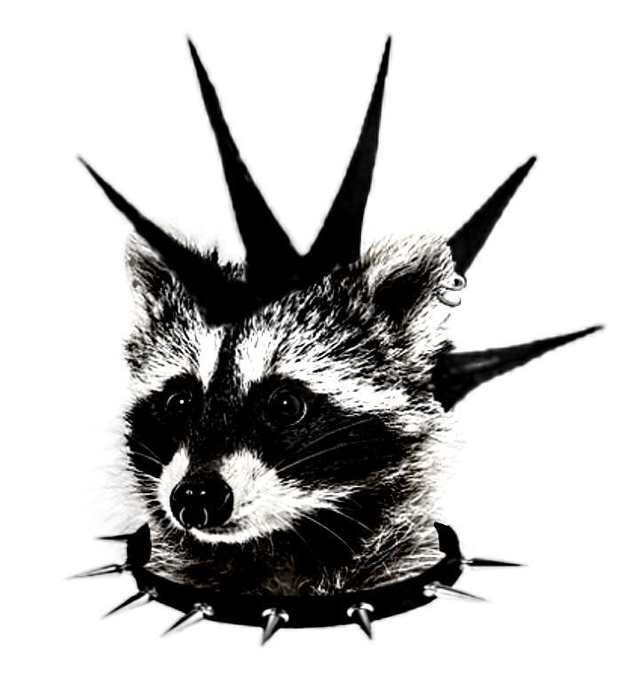

Pedro H. de Paula Maschio 💻
Desenvolvedor Fullstack e Freelancer
Olá, me chamo Pedro H. de Paula Maschio, sou formado em Análise e Desenvolvimento de sistemas pelo Instituto Federal de São Paulo, campus de Catanduva. Nos dias atuais atuo como desenvolvedor fullstack em uma empresa de controle de acesso, utilizando as ferramentas Angula, Java com Spring Boot, Android, PostgreSQL e Oracle XE. Além disso também atuo como freelancer, desenvolvendo soluções personalizadas para todas plataformas, Web, Mobile e Desktop.
Projetos 📝
